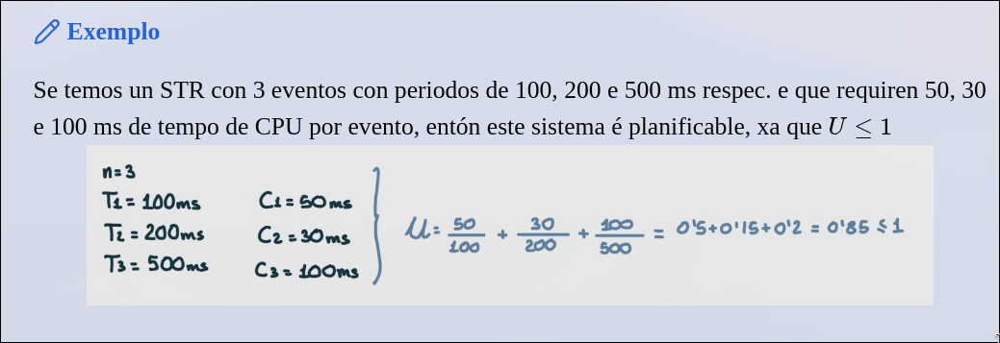
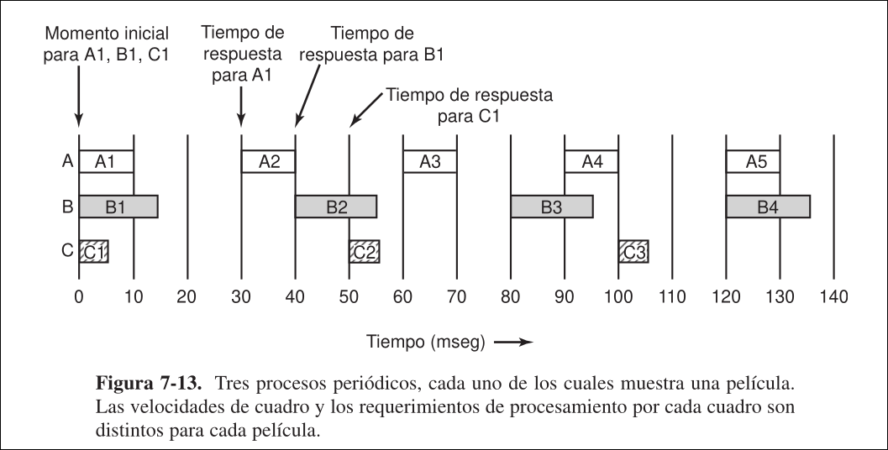
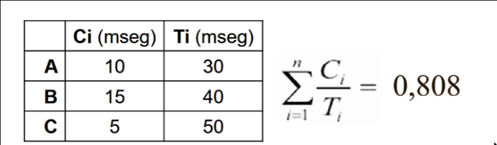
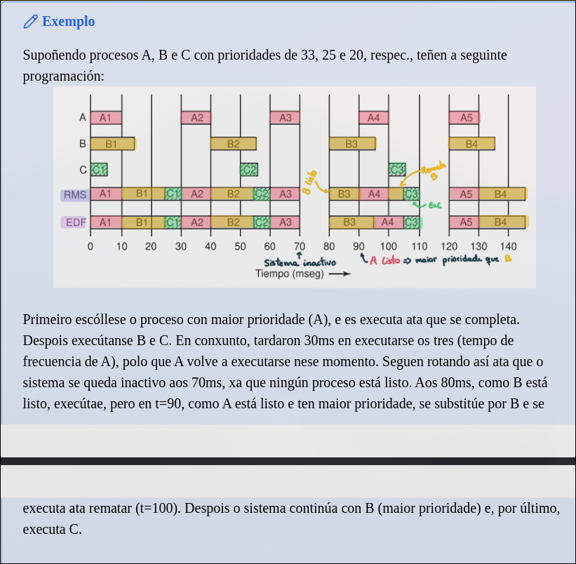
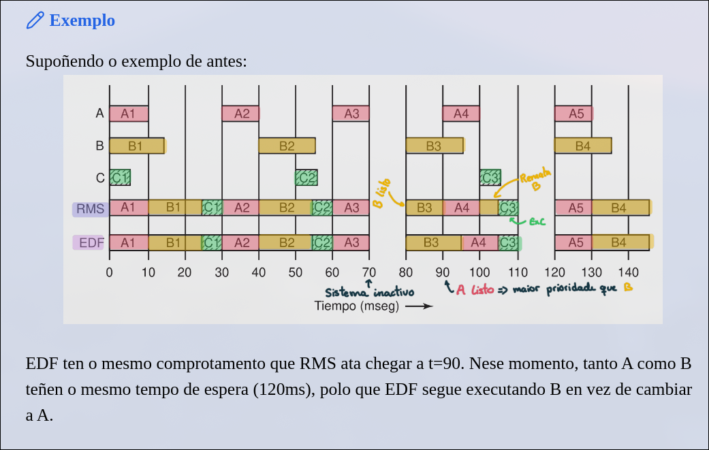
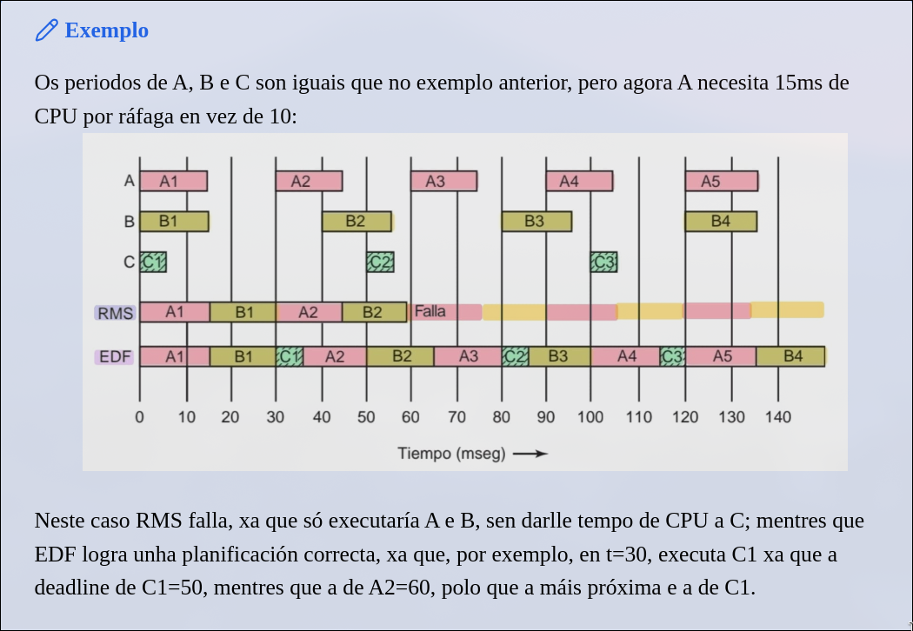

Sistemas en Tiempo Real
Un sistema en tiempo real recibe estímulos desde dispositivos físicos externos y su buen comportamiento implica:
- Responder correctamente a estos estímulos
- Las respuestas se producen dentro de un intervalo de tiempo determinado
Ejemplos: reproductor de CDs de audio, monitores de pacientes en las urgencias de un hospital, autopiloto en una nave, etc.
Hay dos tipos de sistemas en tiempo real:
- Sistemas de tiempo real duro: el tiempo de respuesta debe garantizarse a toda costa
- Sistemas de tiempo real suave: una respuesta tardía no produce graves daños, pero sí un deterioro del funcionamiento global.
3.1 Planificación en Sistemas de Tiempo Real
El comportamiento en tiempo real se logra dividiendo el programa en varios procesos que tienen:
- Comportamiento predecible y conocido de antemano
- Tiempos de vida cortos, y su ejecución finaliza en muchos menos de 1 segundo.
Cuando se detecta un nuevo evento externo, es responsabilidad del planificador planificar los procesos de tal forma que se cumpla con todos los tiempos límite. Los eventos a los que puede llegar a responder un sistema en tiempo real son de dos tipos:
- Periódicos: ocurren a intervalos regulares
- Aperiódicos: ocurren de manera impredecible
Si un sistema tiene que atender a
donde número de eventos periódicos. factor de utilización. tiempo máximo de ejecución para el evento . periodo para el evento . fracción de CPU que está utilizando el evento .

En este cálculo se supone que la sobrecarga por cambio de contexto es tan pequeña que se puede ignorar.


Los algoritmos de planificación en tiempo real puede ser:
- Estáticos: toman sus decisiones de planificación antes de que el sistema empiece a ejecutarse. Solo funciona cuando hay disponible de antemano información perfecta acerca del trabajo que se va a realizar y los tiempos límite que se tienen que cumplir
- Dinámicos: toman sus decisiones de planificación en tiempo de ejecución.
3.2 RMS: Programación Monotónica en Frecuencia
Es un algoritmo de programación de tiempo real estático. Se puede usar para procesos que:
- Cada proceso periódico se debe completar dentro de su periodo
- Ningún proceso es dependiente de otro
- Cada proceso necesita la misma cantidad de tiempo de CPU en cada ráfaga
- Ningún proceso no periódico tiene tiempo de respuesta
- Los cambios de contexto ocurren instantáneamente, sin sobrecarga.
Se le asigna a cada proceso una prioridad fija, igual a la frecuencia de ocurrencia de su evento de activación. Por ejemplo: un proceso que se debe ejecutar cada 30 meseg tiene prioridad 33.
El planificador ejecuta siempre el proceso que esté listo y tenga la mayor prioridad, reemplazando el proceso en ejecución si es necesario. Es el algoritmo estático óptimo.
Por ejemplo: los procesos

3.3 EDF: Menor Tiempo de Respuesta Primero
Es un algoritmo de programación de tiempo real dinámico.
- Igual que RMS, se puede usar para procesos aperiódicos
- A diferencia de RMS, no requiere el mismo tiempo de ejecución en cada ráfaga de CPU
- Cada proceso periódico se debe completar dentro de su periodo
Cada vez que un proceso necesita tiempo de CPU, anuncia su presencia y su tiempo de respuesta. El planificador mantiene una lista de procesos ejecutables ordenados según su tiempo de respuesta. Ejecuta el primero en la lista (el que tiene el tiempo de respuesta más cercano). Cada vez que un nuevo proceso está listo, se comprueba si su tiempo de respuesta ocurre antes que el del proceso en ejecución. De ser así, el nuevo proceso reemplaza al actual.


¿Por qué falla RMS? Porque ese algoritmo solo funciona cuando se cumple que:
Dado que en el ejemplo anterior el uso de CPU era de 0.975, RMS tenía muchas probabilidades de fallar, mientras que por el contrario, EDF siempre funciona para cualquier conjunto programable de procesos.